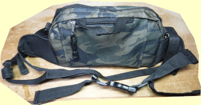
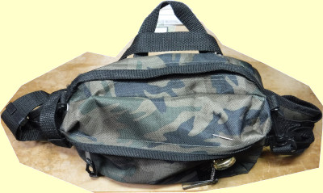
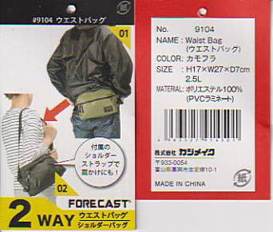
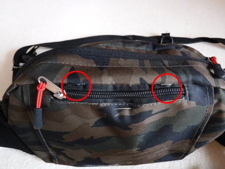
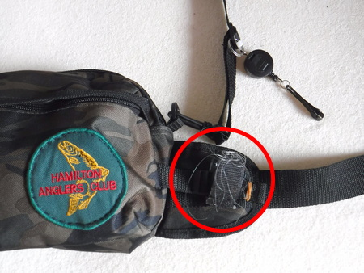
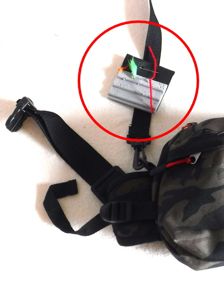

私のお気に入り
チェストパック（ウェストバッグを転用）
2019/11/04のニゴイ狙いの釣行では、厚いフリースの上にレインジャケットを着込み、さらにその上に重いフライベストを着る気にはなれず、昔トンガリロ・リバーで活躍した自作チェストパックを持って行った。問題無く使えたのだが、収納容量が若干少ないのと、パックを首から提げているだけなので、移動の時にブラブラ横揺れしたり、藪漕ぎの際に枝に引っ掛かったりして困った。パック下部の両サイドにナイロンベルトとバックルを付けようか....などと考えて、近所のホームセンターに行ってみた。
すると、デイパックや収納バッグのコーナーでこのウェストバッグを見つけた。ショルダーベルトが付いているので、これを首に掛け、ウェストベルトをやや高めの胸の辺りに回せば、充分チェストパックとして使えると思った。
価格はなんと税抜きで980円！ 色も目立たない迷彩色で、生地はポリエステル100%、裏面にPVCコーティングが施されており、ある程度の防水性はありそうだ。
収納部は、前面と背面にポケット。前面のポケットには予備のラインを巻いたスプールを入れ、表側にはラインクリッパーとリトリーバーを付けた。メインのコンパートメントは幅が６cmほどあるので、ルアーケースが２個余裕で収まる。内部の前側には、マジックテープで留める仕切りがあるのでここには水温計とアーミーナイフを入れている。内部後ろ側には２つに区分けされた仕切りが設けられている。背面上部には丈夫な取っ手用ループがあるので、持ち運びに便利である。



調べてみると、この FORECAST というブランドは、富山県にある大手雨具メーカー：カジメイク という会社の製品であることがわかった。僕が買った 品番9104 というモデルは、現在でもアマゾンや、楽天市場などで販売されているようだが、価格は 1,000～2,300円までと幅があった。（笑） 色によっても価格が異なるようだ。お求めの際は、値段をよく調べてからご購入して下さい。
ちょくちょくホームセンターなどを覗くのも、掘り出し物が見つかって良いことがあるナ、と思った次第.....。
2021/11/23 加筆
背面上部に付いていた取っ手用ループは、背面ポケットに入れてあるフック外し用のプライヤーを取り出す時に不便なので、思い切って切り取ってしまった。

渓流のルアー用、冬期本流のニゴイルアー用、ニゴイフライ用など、いちいち内容物を詰め替えないでも良いように、ホームセンターへ行くたびに買ってしまい、見分けが付かなくなったので、ワッペンを縫い付けてみた。（笑）


自作のフライパッチを安全ピンで固定した。
私のお気に入り 目次へ
サイトマップ
ホームへ
お問い合わせ